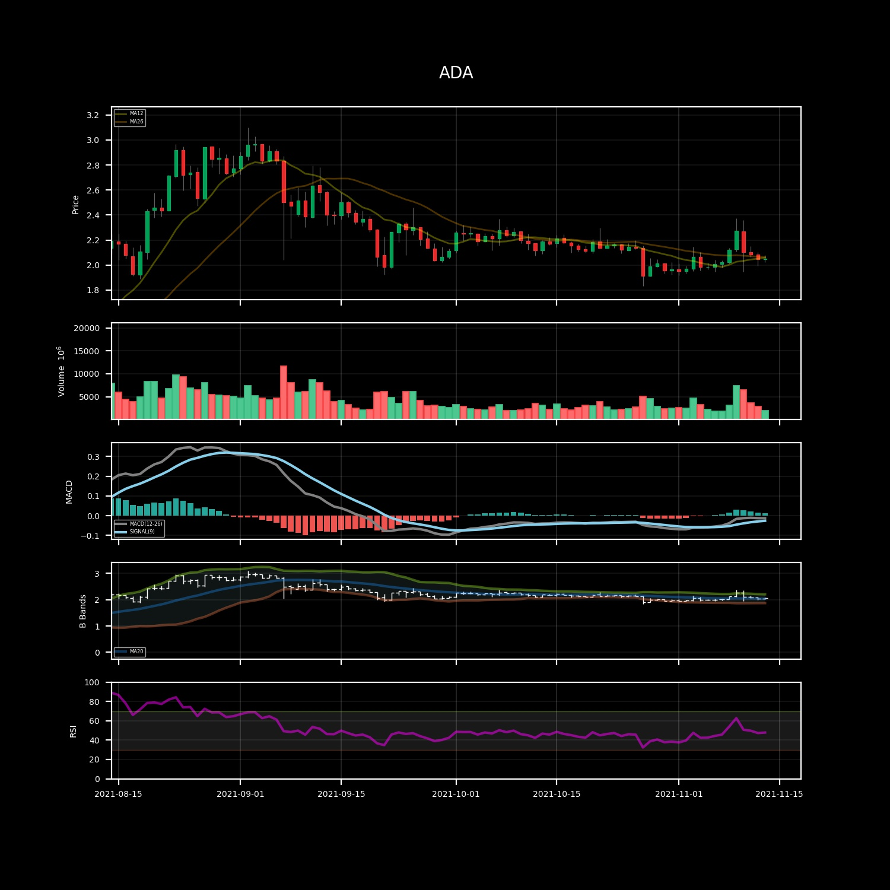

Quick start¶
This repository - as of 15 November 2021 - is the source code for automated reporting of cryptocurrency prices. It uses a telegram bot (@ccrryyppttoo_bot) to send daily updates on crypto prices.

The coins that are actually tracked are: BTC,ETH,ADA,MATIC, SOL.
If you wish to get updates on the selected coins, just open a chat with the bot and start the conversation with \start. You will be added to the user list.
The package is used as in main.py.
This script is executed on a AWS ec2 istance every day at 06:30 AM UTC.
The Scraper() module gets the necesarriy data from coinmarketcap.com and stores data locally.
Tg_notifications() starts a telegram client to send outputs to bot followers.
CoinFigure() Creates a figure that resumes the last month of data. If requested, it plots also technical indicators.
The folder examples contains main.ipynb that allows to experiment interactively with the repository capacities.
Pre-processing & initalization of tools¶
Configuration¶
The config() class is used to pass the user configuration.
It requires to specify the location of the folder in which there is a config.json file, in which it is possible/required to specify the following parameters:
the parametrization of Technical Analysis (eg. window of moving averages, RSI length, etc…)
the API key to the telegram bot.
the API key to the Coinbase client.
Additionally, it is possible to specify the location of a data folder where to save all data (eg. time series of prices)
Price data scraping¶
The Scraper() gets the necesarriy data from coinmarketcap.com and stores data locally.
Telegram notifications¶
In order to receive daily updates on prices, a telegram bot (@ccrryyppttoo_bot) is used.
The bot can be used both in “normal” mode or in “channel mode”.
The normal mode (channel_mode=False) requires to specify a chat_id parameter to specify the desired chat to send the message/picture/document to. Otherwise, when channel_mode=True then the bot will send the content to all users specified in the telegram_users.csv.
The bot has the capability of adding new users to the known list of users, just by recording the chat_id of the users that have interacted with it. Everytime the bot is initiated, it checks for new users.
Price data analysis¶
The project is focused on the production of a customizable and useful set of information to be up to date with cryptocurrency prices.
The reporting structure is based on the production of graphs and by well-structured text.
Plotting prices and indicators¶
CoinFigure class inherits from the classic TS class and it is a structured plot of the latest price data. Indicators are computed on request.
There following are the kind of plots that have been implemented.
defaultDefault plot.candlesticks
volume
taTechnical Analysis plot.candlestick (with MA lines)
volume
MACD
Bollinger bands
RSI
The ta kind of plot is easily customizable, for integrating and/or changing indicators in the plots.
Reporting useful information¶
The class CoinFigure inherits from TS and so it has some reporting methods associated, such as report_percentage_diff that produces a well structured string with formatting to be sent via telegram or read over the terminal.
**ADA**
- 1d: 0.36 %
- 3d: -2.32 %
- 7d: 2.32 %
- 14d: 4.89 %
- 60d: -14.30 %
Ex: percentage difference for a set of different days.